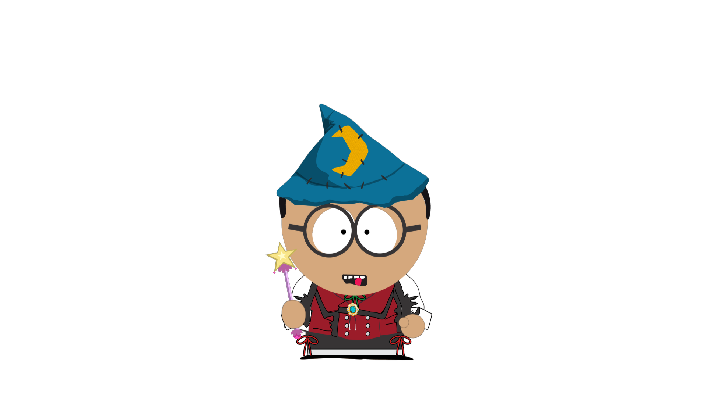
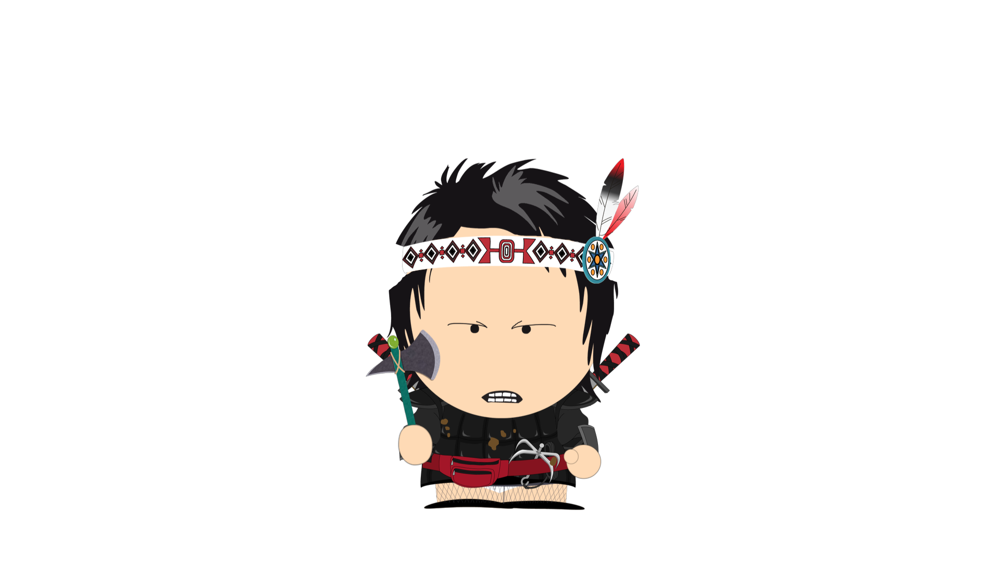
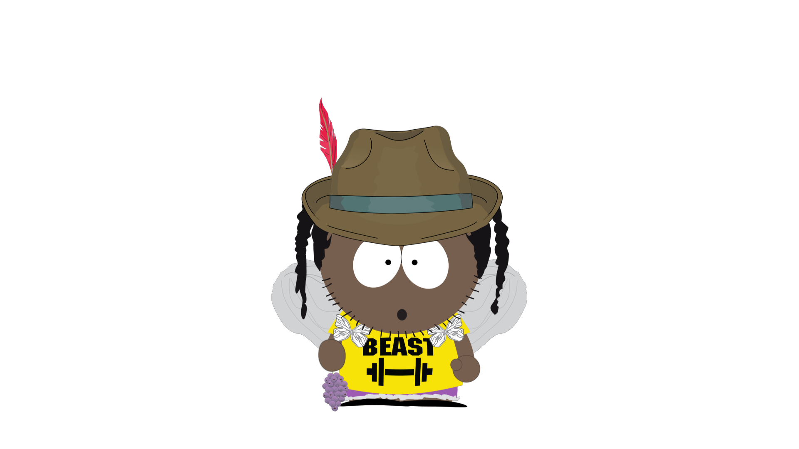

Arturo

Arturo era um mago poderoso, porém, apesar de suas habilidades não conseguia curar sua querida filha:
Fofolete.
Fofolete sofria de uma doença desconhecida que a fazia sentir fortes dores, Arturo procurou superiores
governantes para conseguir raros ingredientes que ajudariam a diminuir as dores de sua filha.
Contudo, foi tratado com desdém e deixado de lado. Revoltado com seus governantes, usou de sua magia
para conseguir forçadamente os ingredientes necessários, mas no meio do caminho foi detido e finalmente
preso por afrontar seus governantes.
Ficando longe de sua amada filha.
Thoman

Thoman era um notório guerreiro, usava um grande machado, era um decendente Viking. Com suas habilidades,
se tornou um mercenário que realizava missões de grandes recompensas.
O seu grande sonho era acabar com a pobreza de sua cidade natal: Soft. Logo, toda recompensa arrecadada
em suas missões eram destinadas ao povoado de sua querida cidade.
Porém, por causa da inveja de outros mercenários pela fama que Thoman havia conseguido, foi forjado um
crime que Thoman não havia cometido, conseguindo assim prendê-lo injustamente, impedindo-o de continuar
suas missões.
Tessete

Tessete era um ser híbrido, metade humanoide, metade polvo. Era um monstro poderoso, mas apesar de tudo,
ele não tinha dimensão de seu potencial.
Desde de sua infância, Tessete sofria rejeições de todos os lados.
Por não ter nenhum laço afetivo, desconhecia de seus poderes, não tinha uma personalidade consolidada, e
estava em busca de atenção de todos a sua volta.
Infelizmente, por desconhecer seus poderes, desastrado que era, sem intenção ateou fogo na estatua dos
herois de sua cidade, chamando atenção negativa para si, sendo preso por crime contra o patrimonio de
sua cidade.